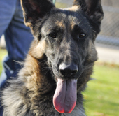
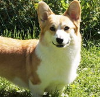

Our Breeds

The breed has a distinct personality marked by direct and fearless, but not hostile, expression, self-confidence and a certain aloofness that does not lend itself to immediate and indiscriminate friendships. The dog must be approachable, quietly standing its ground and showing confidence and willingness to meet overtures without itself making them. It is poised, but when the occasion demands, eager and alert; both fit and willing to serve in its capacity as companion, watchdog, blind leader, herding dog, or guardian
more

Welsh folklore says the corgi is the preferred mount of tiny, woodland fairy warriors. There is also a folk legend that says corgis were a gift from the woodland fairies, and that the breed's markings were left on its coat by fairy harnesses and saddles.
Corgis are very active and energetic. They have a strong desire to please and should receive both physical and mental exercise regularly. They should be socialized early on because they tend to be shy and cautious with strangers and other dogs. They have a tendency to be very vocal, and for this reason make good alarm dogs. They are typically good with children, but due to their herding behavior they may nip at their heels during play, although this behavior can be trained out of the dog. Pembroke corgis are outgoing and playful as well as bold and protective while Cardigan corgis are more devoted and affectionate.
more
Corgis are very active and energetic. They have a strong desire to please and should receive both physical and mental exercise regularly. They should be socialized early on because they tend to be shy and cautious with strangers and other dogs. They have a tendency to be very vocal, and for this reason make good alarm dogs. They are typically good with children, but due to their herding behavior they may nip at their heels during play, although this behavior can be trained out of the dog. Pembroke corgis are outgoing and playful as well as bold and protective while Cardigan corgis are more devoted and affectionate.
more